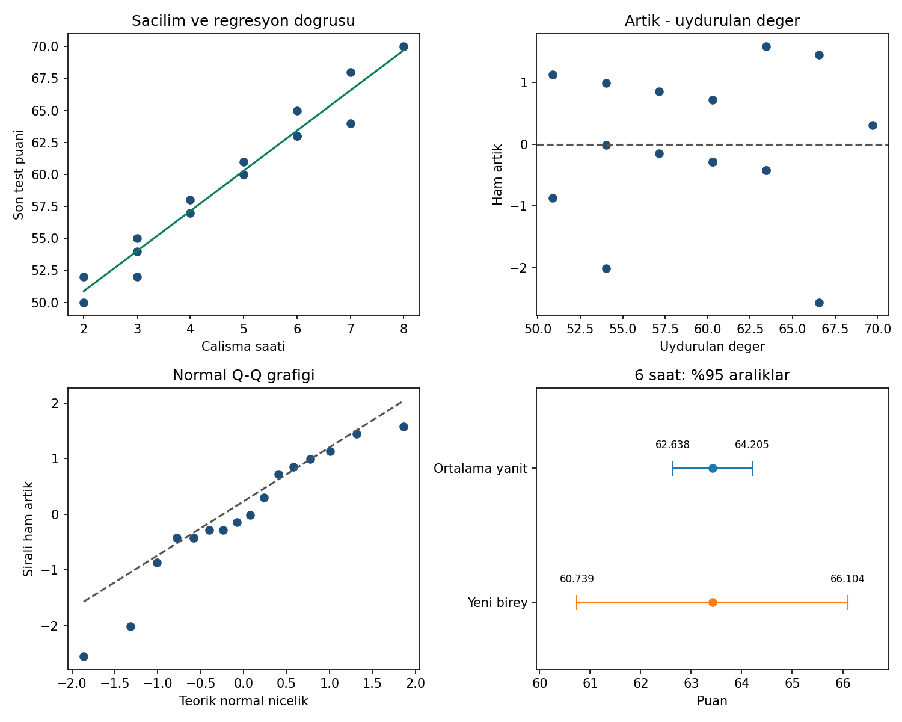

13 / KORELASYON VE BASIT REGRESYON
İlişkiyi çiz, tahminin sınırını gör.
16 yapay gözlem · çalışma saati ve puan
Sorudan yönteme
Çalışma süresi ile puan arasındaki ilişkiyi nasıl özetleriz? Altı saat çalışan yeni bir kişi için belirsizlik ne kadardır?
Doğru: ŷ = 44,598039 + 3,137255 × saat. Ortalama yanıt aralığı ile tek yeni gözlem için öngörü aralığı farklı belirsizlikleri ölçer.
Gör, karşılaştır, yorumla

r = 0,980618; R² = 0,961611. Altı saatte tahmin 63,4216; %95 ortalama yanıt aralığı [62,6385; 64,2047], yeni birey aralığı [60,7387; 66,1044].
Yüksek korelasyon nedensellik göstermez. Saçılım, artık ve Q–Q grafiklerini birlikte inceleyin. Küçük örneklemde tanı grafiklerinin gücü sınırlıdır. Çok küçük p değerini p = 0 olarak raporlamayın.
62 referans değerinin tamamı
Gösterim yuvarlatılmıştır; kodlar tam duyarlıklı CSV’yi kullanır.
| Grup | Ölçü | Değer |
|---|---|---|
| ozet | hacim | 16 |
| ozet | saat_ort | 4.75 |
| ozet | puan_ort | 59.5 |
| ozet | sxx | 51 |
| ozet | syy | 522 |
| ozet | sxy | 160 |
| ozet | sse | 20.03921569 |
| ozet | mse | 1.431372549 |
| ozet | serbestlik | 14 |
| ozet | korelasyon | 0.9806175085 |
| ozet | r_kare | 0.9616106979 |
| ozet | egim | 3.137254902 |
| ozet | sabit | 44.59803922 |
| ozet | se_egim | 0.1675294852 |
| ozet | se_sabit | 0.8501192896 |
| ozet | t_egim | 18.72658355 |
| ozet | p_egim | 2.618312027e-11 |
| ozet | kritik_t | 2.144786688 |
| ozet | egim_alt | 2.777939892 |
| ozet | egim_ust | 3.496569912 |
| ozet | sabit_alt | 42.77471468 |
| ozet | sabit_ust | 46.42136375 |
| ozet | yeni_saat | 6 |
| ozet | ongoru | 63.42156863 |
| ozet | se_ortalama | 0.365122048 |
| ozet | se_birey | 1.250874358 |
| ozet | ortalama_alt | 62.63845972 |
| ozet | ortalama_ust | 64.20467754 |
| ozet | birey_alt | 60.73870996 |
| ozet | birey_ust | 66.1044273 |
| uydurulan | satir_01 | 60.28431373 |
| uydurulan | satir_02 | 54.00980392 |
| uydurulan | satir_03 | 66.55882353 |
| uydurulan | satir_04 | 63.42156863 |
| uydurulan | satir_05 | 63.42156863 |
| uydurulan | satir_06 | 50.87254902 |
| uydurulan | satir_07 | 69.69607843 |
| uydurulan | satir_08 | 57.14705882 |
| uydurulan | satir_09 | 57.14705882 |
| uydurulan | satir_10 | 60.28431373 |
| uydurulan | satir_11 | 54.00980392 |
| uydurulan | satir_12 | 66.55882353 |
| uydurulan | satir_13 | 54.00980392 |
| uydurulan | satir_14 | 60.28431373 |
| uydurulan | satir_15 | 50.87254902 |
| uydurulan | satir_16 | 63.42156863 |
| artik | satir_01 | -0.2843137255 |
| artik | satir_02 | -0.009803921569 |
| artik | satir_03 | 1.441176471 |
| artik | satir_04 | -0.4215686275 |
| artik | satir_05 | 1.578431373 |
| artik | satir_06 | 1.12745098 |
| artik | satir_07 | 0.3039215686 |
| artik | satir_08 | 0.8529411765 |
| artik | satir_09 | -0.1470588235 |
| artik | satir_10 | 0.7156862745 |
| artik | satir_11 | -2.009803922 |
| artik | satir_12 | -2.558823529 |
| artik | satir_13 | 0.9901960784 |
| artik | satir_14 | -0.2843137255 |
| artik | satir_15 | -0.8725490196 |
| artik | satir_16 | -0.4215686275 |
Aynı veri, üç yazılım
ZIP’i tamamen ayıklayın. Çalışma klasörü b13/ornek-01 olmalıdır. Kodlar bilgisayarınızda çalışır.
Python
py cozum.py --check --grafikNumPy, pandas, SciPy ve Matplotlib gerekir. Beklenen: 62 kontrol değeri eşleşiyor.
R / RStudio
Rscript --vanilla cozum.R --check --grafikStandart R yeterlidir. RStudio konsolunda source("cozum.R") yalnız hesapları gösterir; otomatik kontrol için:
kontrol_et(sonuc, read.csv("beklenen-sonuclar.csv", stringsAsFactors=FALSE))IBM SPSS 29 · çalışma kabulü bekliyor
SPSS 29 adım adım kontrol rehberi
CD 'C:/.../b13/ornek-01'.
INSERT FILE='spss-dogrula.sps' ERROR=STOP.Sonra aynı klasörde terminalden:
py spss_karsilastir.py --surum 29 --rapor spss-sonuc.jsonSPSS dışa aktarımı olmadan bu kontrol geçmez. SPV çıktısını ve JSON raporunu birlikte saklayın.
Önce tahmin et, sonra açıkla
Yeni birey için öngörü aralığı, ortalama yanıt aralığından neden geniştir?
Gerekçeli yanıtı göster
Yeni bireyin hatası, ortalama yanıt tahmininin belirsizliğine eklenir: SE_birey² = MSE + SE_ortalama². Aynı merkez çevresinde daha geniş bir aralık oluşur.
Doğrulama durumu
| Ortam | Durum |
|---|---|
| Python | 62 referans değeri; grafik üretimi ve hatalı girdi kontrolleri geçti. |
| R 4.3.3 | 62 referans değeri ve Python–R sonuç karşılaştırması geçti. |
| IBM SPSS | Syntax hazır. Gerçek SPSS çalıştırması ve çıktı kabulü bekliyor. |
17 Eylül 2026. Sayısal uyum, araştırma varsayımlarının sağlandığını kanıtlamaz.